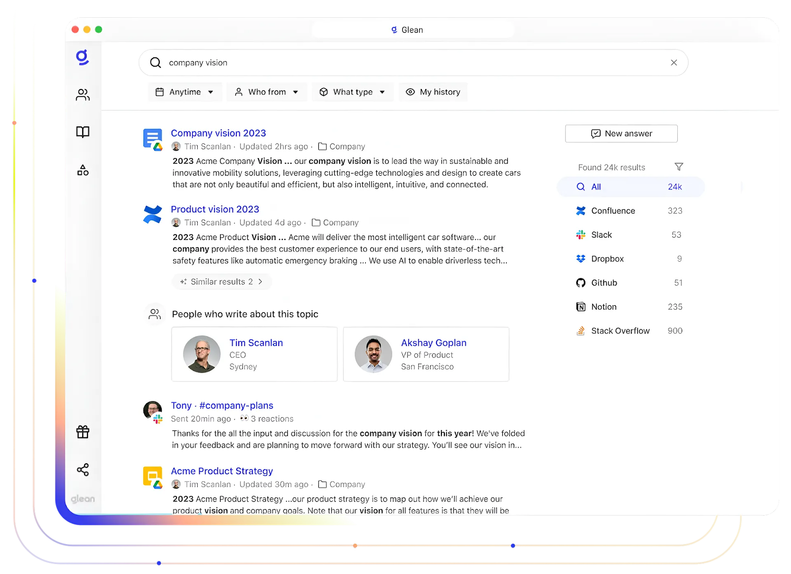
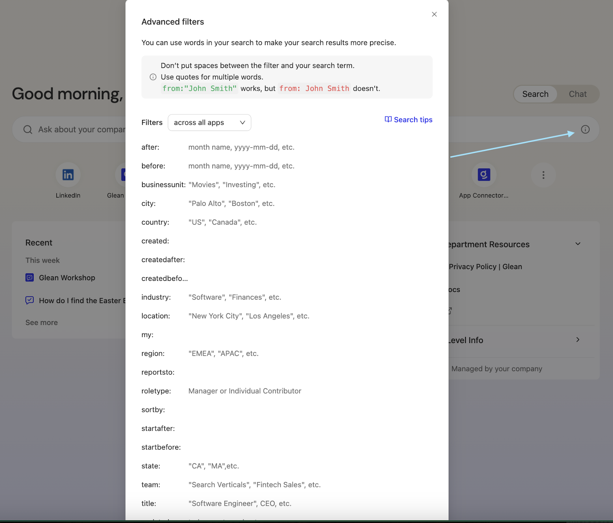
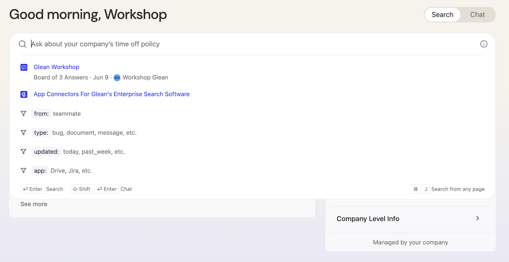
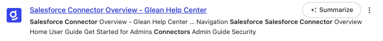
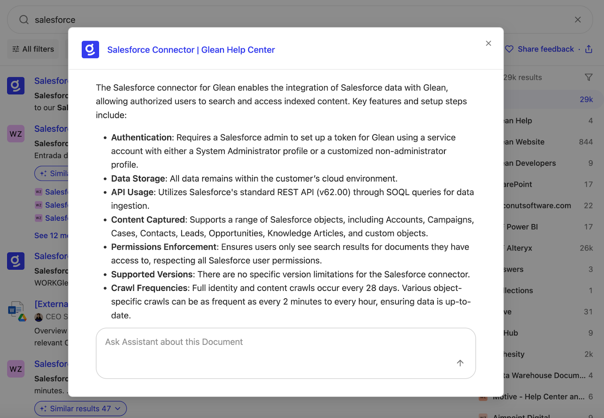
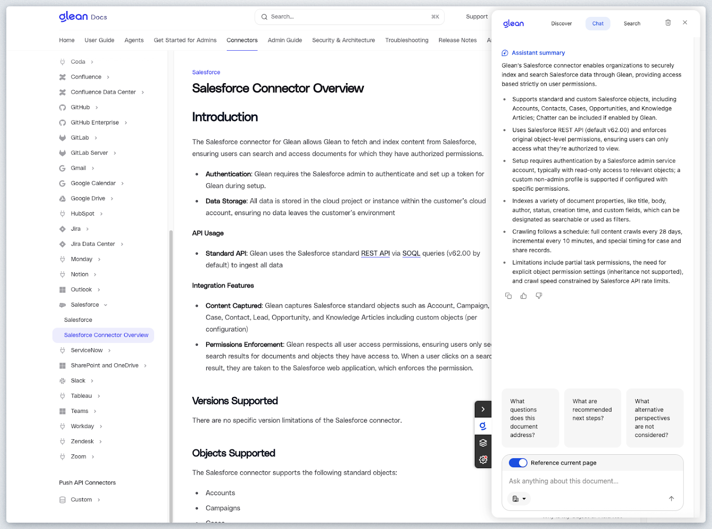
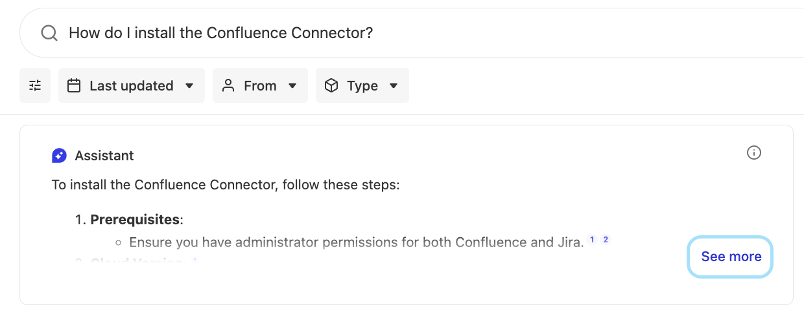
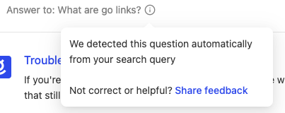
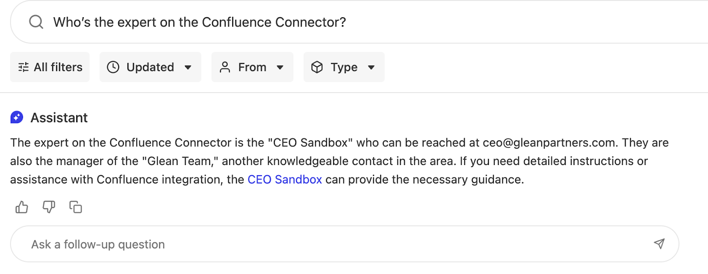
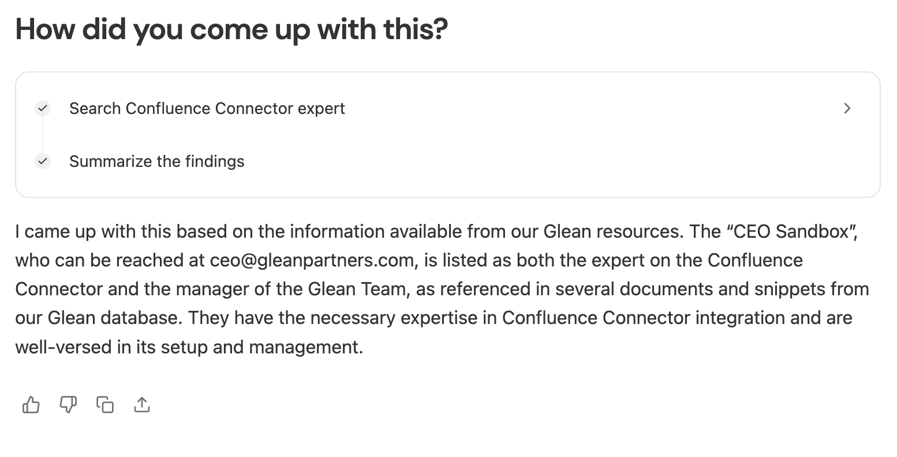

In this hands-on lab, you will explore Glean's Enterprise Search platform and discover why it has become the world's leading enterprise search engine. You'll gain practical experience with Glean's core search capabilities that serve as the foundation for advanced AI-powered features.
Why Enterprise Search Matters
Enterprise search forms the backbone of effective generative AI implementation. Before any AI assistant can provide accurate, relevant responses, it needs access to high-quality, well-indexed information. Glean's superior search and retrieval capabilities enable organizations to unlock the full potential of generative AI tools like the Glean Assistant, which you'll examine in the next lab session.
Key Features You'll Explore
During this lab, you will work with Glean's search interface to understand its core components:
- Smart Search Box: Test the autocomplete functionality that provides real-time suggestions as you type
- Results Display: Navigate through search results and examine how Glean presents relevant documents and information
- Customization Options: Explore theme settings and interface personalization features
- Security Integration: Understand how authentication mechanisms ensure secure access to organizational content
By the end of this session, you'll understand how Glean's search platform creates an efficient, tailored search experience that meets your organization's specific requirements and prepares the groundwork for AI-enhanced productivity tools.
If you're already logged in, feel free to go directly to the next step, Execute your First Search or follow the steps below to login first.
Navigate in your browser to https://app.glean.com which will re-direct you to the Glean login page.

Enter the email address provided for you by the Workshop Moderator. First enter the email address in the Work email field and click the Log in button.
You will be presented with a screen similar to the following. Enter the password provided by your Workshop Moderator and click the Sign in button.

Once completed, you will be redirected to the Glean Search page.

If you don't see the Glean Search page of the Home page, click on the logo of the Home icon in the top left corner of the screen.

Congrats! You have successfully completed this step of the guide. The single sign-on authentication process through Okta, demonstrating Glean's seamless integration with your organization's identity management system. This streamlined login experience eliminates the need for additional credentials while ensuring secure access to enterprise resources. Now that Glean has authenticated your identity, the platform can personalize your search experience, apply appropriate access controls based on your permissions, and deliver results tailored to your role and responsibilities within the organization. This identity-aware foundation enables Glean to provide you with relevant, authorized content while maintaining the security standards your enterprise requires.
When you land on the homepage of the Glean Platform, you will be presented with a "Google-Like" interface for querying the indexed corpus of knowledge within the Glean Platform. Glean is a personalized experience where you will also see Announcements that have been created for either your team or the company as a whole, recent documents you may have been working on, your calendar, as well as documents you've been collaborating on.
Glean's advanced search filters enhance the precision and relevance of search results. Click on the icon ⓘ to find the advanced search details as shown.

Users can utilize quotes around specific words or phrases to ensure their presence in the search results, enhancing the accuracy of searches.
Click in the Search box and notice that an Autocomplete box opens up with past searches as shown:

Slowly type "salesforce" one letter at a time to see the Autocomplete feature in action. Once satisfied, either click the "salesforce" search link or hit enter on your keyboard.
You'll be presented with the SERP (Search Engine Result Page) similar to the following:

The SERP page provides many features such as:
- The documents returned in order based upon relevancy
- List of indexed sources on the right side including how many documents were found in each source
- Filtering mechanisms for date, authors, and data types.
You can of course click any document to be redirected directly to the document from its datasource. Glean does not create a copy of the documents, it only stores an index and allows the user to link directly to the document within its native source.
Hover over any of the documents and notice how a "Summarize" button shows up.
Click the "Summarize" button when you hover over the "Salesforce Connector Overview | Glean Help Center" Glean Developers document as shown:

A popup window will present itself similar to the following:

As you can see, a summary of the document is presented as well as an AI Assistant conversation chat window to ask any questions you may have concerning this document.
Tight integration between the SERP and the AI Assistant drives deep value for Glean Customers.
If you wish, feel free to ask a followup question of this document. Maybe something like:
Tell me more about the installation process
Close the popup window by clicking the X button in the top right of the popup.
Next, click the "Salesforce Connector Overview | Glean Help Center" document as shown below to open it in a new tab.
You have been redirected to Glean Public Help Docs on https://docs.glean.com. Specifically the help document surrounding the Salesforce Connector. You can of course read this document as necessary. But the purpose of having you accomplish this is to show another feature of the Glean Platform that is affectionately known as "Glean Where you Work"
Having ready access to your company knowledge during your normal workflow can drastically enhance your productivity. Glean Customers will install a plugin/extension to their browser(s) in order to be able to popup Glean literally at their fingertips.
If you have the Glean Extension installed you can press Cmd+J (Mac) or Alt+J (Windows) to popup a sidebar with the full power of the Glean Platform.
Since most of you will not have this installed, you can either install it if you have time and the privilege to do so on your laptop, or you can view the screenshot below.
Here is a screenshot of the sidebar that pops up when you have the Glean Extension installed in your browser.

As you can see above you are able to see a summary of the document/page you have open, search the entire corpus of knowledge, and/or see recommended documents that are related to the content on the current page.
Navigate back to the browser tab with the Glean SERP.
In the Search Bar enter the following (It is formulated into a question on purpose):
How do I install the Confluence Connector?
As you can see the SERP responded the same as it did earlier with a series of documents in relevant order. However, since you entered a question into the Search Bar, it also popped the Glean AI Assistant Card as the top result in order to answer your question in Natural Language as shown:

Expand the AI Assistant answer by clicking the  button at the bottom of the Assistant Card.
button at the bottom of the Assistant Card.
You can now see the full AI Assistant answer and are able to fully interact with the AI Assistant directly from the SERP. You can ask follow-up questions/clarifications as necessary and see citations as you learned in the previous lab.

Glean automatically generates a Glossary of Terms as well as Answers while it is indexing your company's corpus of knowledge. Let's show an example of this.
Enter the following into the Search Box:
What is a go link?
As you can see an Answer Card responds as the first Search Result as shown:
Glean Customers use Go Links extensively to quickly get access to web applications that are typically difficult to remember or have very long URLs.
Hover over the icon in the Answer Card as shown:

As you can see the Answer was automatically detected in the "How Go Links work | Glean Help Center" document. Feedback can be shared if the user of the Glean Platform believes this automatically generated Answer is incorrect. (DO NOT share feedback at this point, the answer in this case is accurate).
As mentioned earlier, Glean also automatically generates a Glossary of Terms based upon the indexed content. This helps the Glean Platform understand how employees speak within your organization. Since this is a Public Instance of Glean without extensive data from any specific organization, the Glossary has not been detected automatically.
To show the concept however, consider the following screenshot from Glean's Internal Production instance:
The user in this case asked what QE meant. QE could mean many different things depending on the company. However, within Glean QE means Query Endpoint.
Oftentimes you would like to find out who is considered an expert in a certain area or topic within your organization. This type of activity typically involves either asking somebody else who hopefully knows the answer, or by attempting to figure it out by reading a bunch of content on the topic.
Well... Since Glean IS reading your entire company content and is staying up to date with changes, it knows who the experts are in your company.
In the Search Box enter the following:
Who's the expert on the Confluence Connector?
You should see results similar to the following:
As you can see the user "CEO Sandbox" is the expert on the Atlassian Connector? If this were a production instance, it would be a real user within your organization. But, how did the platform figure out that CEO Sandbox is the expert?
As mentioned above, Glean is reading your entire company knowledge and learning who is creating/modifying content and correlating that information with the context of the content itself. Glean also knows where the user(s) are within the company's hierarchy.
This is also taken into account when answering questions such as this:

If you ever want to understand a bit of "why" Glean has responded in a certain way, or in this case, expert identification. Go ahead and ask Glean in the "Ask a follow-up question" box:

This lab provides a comprehensive overview of the Glean Platform's core functionalities, emphasizing its role as a leading enterprise search engine. The lab guides users through the process of navigating the Glean Search Page, executing searches, and interacting with search results, showcasing the platform's advanced features such as autocomplete, secure access, and customizable themes. By integrating the AI Assistant, Glean enhances the search experience, allowing users to quickly summarize documents and ask follow-up questions, thereby improving the efficiency and accuracy of information retrieval. The lab also highlights the importance of having access to company knowledge within the user's workflow through the Glean browser extension, which significantly boosts productivity by providing relevant information at the user's fingertips.
Furthermore, the workshop underscores Glean's ability to automatically generate answers and glossary terms, demonstrating its adaptability to the specific language and needs of an organization. This feature ensures that users can quickly find accurate information without extensive manual input. The lab also introduces the concept of expert search, enabling users to identify subject matter experts within their organization based on content creation and modification activities.